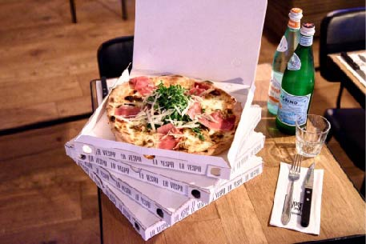

La Vespa
Bussum of Laren
La Vespa is een restaurantje in het centrum van Bussum. Het is een super lekkere houtovenpizzaria. Ze hebben een open keuken en daarin staat een grote houtoven waar ze de lekkerste pizza's in bakken. Het wordt gerund door echte Italianen en het restaurant geeft een heerlijke huiselijke sfeer. De service is super goed en de mensen die er werken zijn altijd heel gezellig. Zoek je een restuarantje waar je casual kan eten en niet te veel geld hoeft uit te geven? Dan is dit het perfecte restuarant! Heb je juist zin om lekker thuis te eten? Dan kan je ook pizza's afhalen.